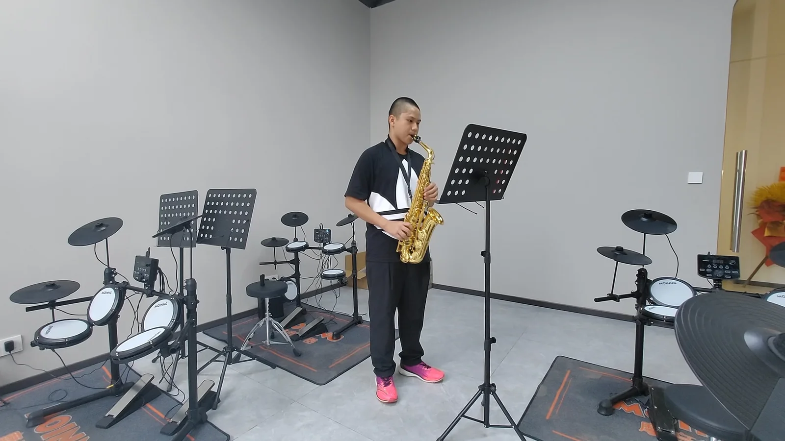
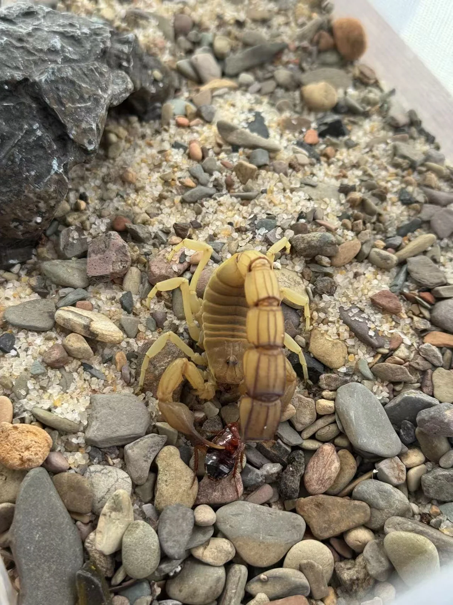
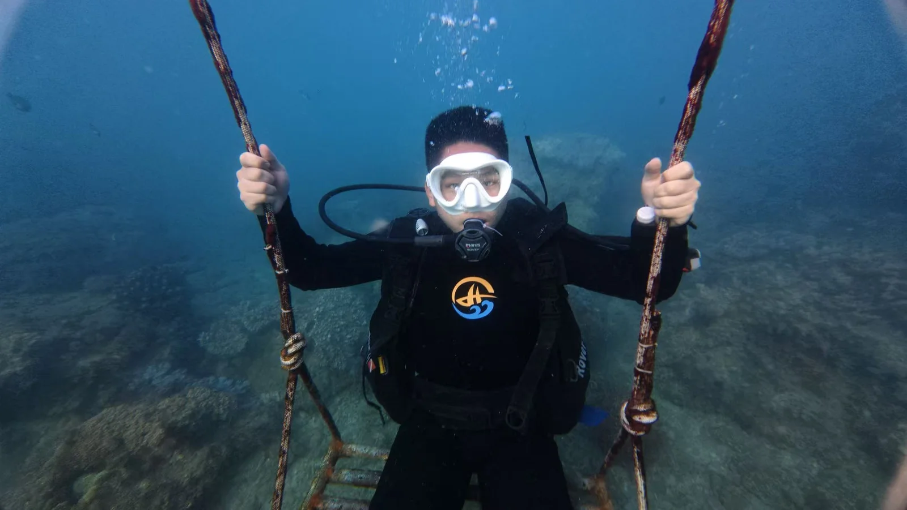
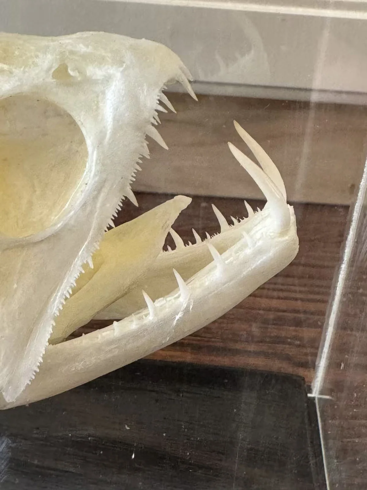
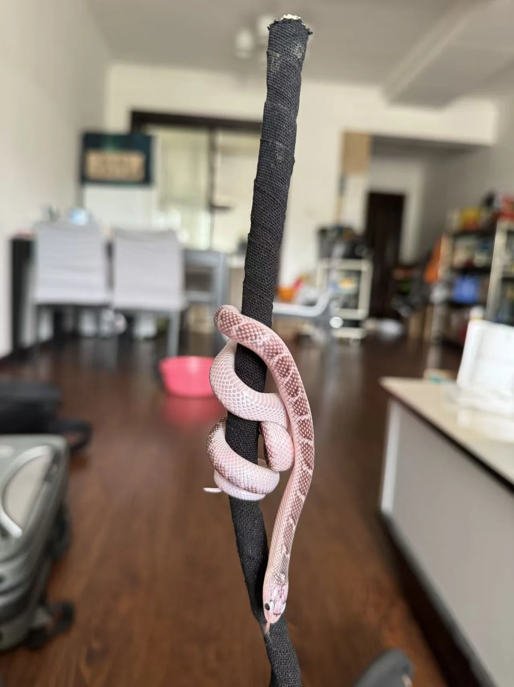
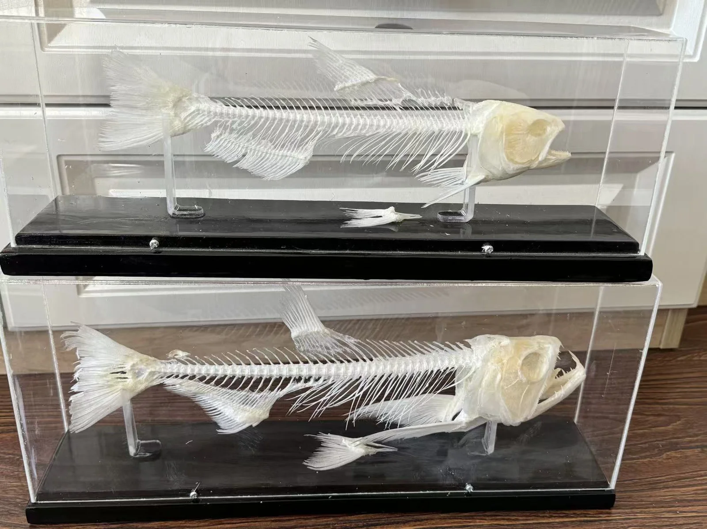
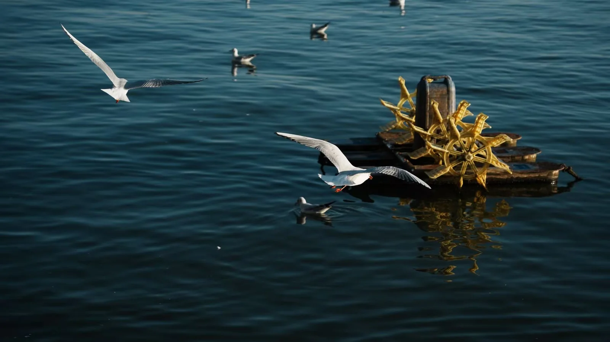

Saxophone Music & Nature Photography
Documenting ten years of disciplined saxophone study alongside optical macro lenses capturing insect cuticles, vivarium micro-fauna, and natural textures.

Saxophone Repertoire Log (Grade 1 → Grade 10)
Official Distinction Certificate: 20240072010301051120007 · China National Opera and Dance Drama Theater
Practicing the saxophone continuously through high school has been a masterclass in auditory sensitivity, embouchure endurance, and diaphragmatic breath support. Just as articulated osteology requires millimeter alignment, classical saxophone pieces demand polyphonic clarity and rhythmic precision.
Chronological Repertoire Journey
Mastered major/minor diatonic scales, Hyacinthe Klosé 25 Daily Etudes, embouchure stabilization, and centered column breathing.
Marcel Mule 18 Exercises after Berbiguier, dynamic nuance from pianissimo to fortissimo, and continuous jaw vibrato modulation.
Eugène Bozza Aria, Jules Demersseman Fantaisie sur un thème original, rapid staccato tonguing, and phrasing rubato.
Concertos by Paul Creston (Sonata Op. 19), Jacques Ibert (Concertino da Camera), and Alexander Glazunov (Concerto in E-flat major).
"Music and biology share a common rhythm: in both disciplines, harmony is not achieved by chance, but by understanding how individual components fit together into a living, resonant whole."
Macro Nature Photography & Biological Textures
Visual observations documenting cellular patterns, compound eyes, cuticular structural colors, and vivarium flora.

Photonic Multilayer Iridescence
Interference reflection generated by stacked chitin and protein layers reflecting selective green-gold spectra.

Peristome Teeth Spore Mechanics
Hygroscopic movement of peristome teeth governing spore dispersal under humidity fluctuations in terrarium glass.

Predatory Dentition Geometry
Macro perspective of alternating replacement teeth sockets situated along the premaxillary and dentary margins.

Symbiotic Lichen Thalli
Foliose and fruticose lichens cloaking old-growth rhododendron trunks, serving as sensitive bio-indicators of pristine air.

Condensation & Surface Tension
Contact angle of mist droplets on creeping fig (Ficus pumila) leaves inside closed habitat vivaria.

Alula & Wingtip Aerodynamics
High-speed shutter freeze showing primary feather splay and alula deployment preventing stall during low-speed hover.